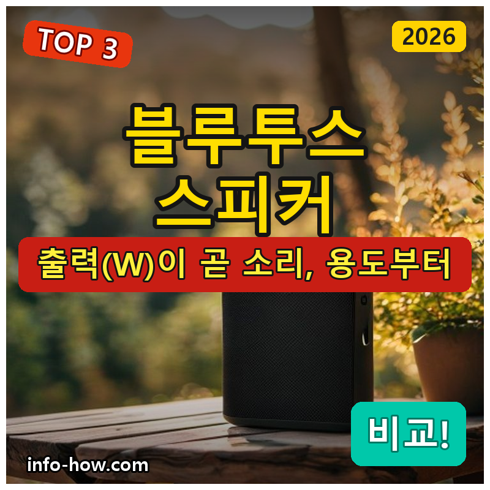
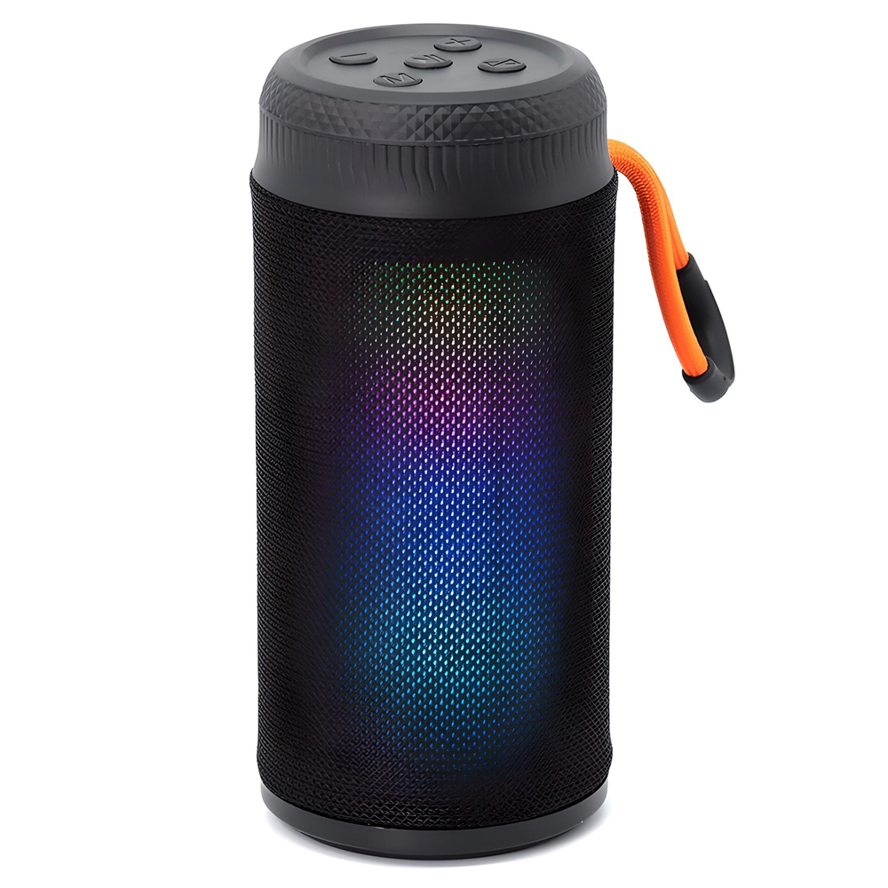
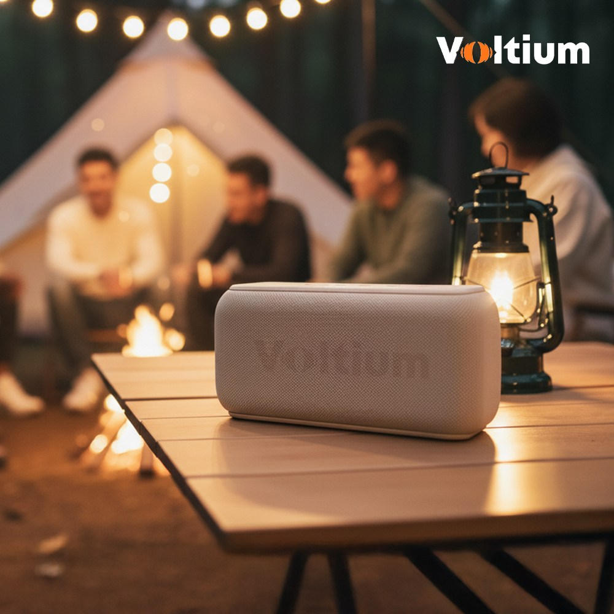

홈 › 제품리뷰 › 디지털/IT
블루투스 스피커, 야외 방수냐 홈 고출력이냐
작성: 생활서식 모음 · 2026-07-12

파트너스 활동의 일환으로 일정액의 수수료를 지급받습니다
🛒 오늘의 쿠팡 특가 보러가기 →
블루투스 스피커, 예뻐서 골랐다가 소리에 실망한 적 없나요?
핵심은 "출력(W)과 방수, 용도" 3대 를
"책상·무드용" "캠핑·샤워 방수" "홈파티 고출력"용도별 정답 까지 담았으니
📋 목차
블루투스 스피커, 야외 방수냐 홈 고출력이냐 — 결론 먼저 스펙 비교표: 한눈에 보기 블루투스 스피커 고를 때 봐야 할 4가지 야외냐 홈이냐, 뭘 사야 할까? 자주 묻는 질문 (FAQ) 결론: 한 줄 요약
블루투스 스피커, 야외 방수냐 홈 고출력이냐 — 결론 먼저
블루투스 스피커는 "어디서 쓰느냐" 가 8할이에요.비파노 생활방수 TWS 처럼 방수되는 휴대용이 무난합니다. 책상 무드용이면 1만원대 미니로 충분하고, 홈파티·넓은 공간을 채울 거면 50W 고출력이 필요합니다.
1 책상·무드용 (가성비 초이스)
가성비

1만원 미만 LED 미니
1. PLEIGO LED 패브릭 블루투스 스피커
1만원 미만 미니 스피커 LED 무드등 겸용 책상·머리맡 개인용으로 딱
고출력은 아니지만
추천 대상
책상·머리맡에서 가볍게 음악 듣는 분 LED 무드등을 겸하고 싶은 분 부담 없이 저렴하게 시작할 분 장점
1만원 미만으로 블루투스 스피커를 부담 없이 경험 LED 무드등을 겸해 분위기 조명으로도 활용 작고 가벼워 책상·침대 옆 어디든 배치 단점
출력이 작아 넓은 공간·야외·파티용으로는 볼륨이 부족 이 제품은 개인 책상·무드용 입니다. 야외·방수가 필요하면 2번, 홈파티·넓은 공간이면 3번 고출력으로 가세요. "가볍게 BGM"이면 가성비 최고입니다.
한줄 리뷰
"큰 소리가 아니라 책상에서 잔잔한 BGM"이 목적이면 딱입니다. LED까지 있어 무드용으로 좋아요. 야외·파티용으로 기대하면 볼륨이 아쉬우니 그 경우 2·3번을 보세요.
주요 스펙
제품: PLEIGO LED 패브릭 블루투스 스피커 급: 미니(개인·무드용) 특징: LED 무드등 겸용 배송: 로켓배송 가격: 약 9,400원 (변동 가능) ※ 실제 스펙·가격과 차이가 있을 수 있습니다
2 캠핑·샤워·야외 (베스트 초이스)
베스트
생활방수 휴대 TWS
2. 비파노 휴대용 생활방수 블루투스 스피커
생활방수 = 샤워·야외 안심 TWS 2대 연결로 스테레오 휴대성·방수·소리 밸런스
캠핑·샤워·야외로 들고 다녀도
추천 대상
캠핑·나들이·야외로 스피커를 들고 다니는 분 샤워·주방 등 물기 있는 곳에서 쓰는 분 2대 연결(TWS) 스테레오를 원하는 분 장점
생활방수라 샤워실·주방·야외에서 물 걱정 없이 사용 TWS로 2대를 페어링해 좌우 스테레오로 확장 가능 휴대성·방수·소리의 밸런스가 좋아 두루 쓰기 무난 단점
생활방수라 완전 침수(수영장 다이빙 등)까지는 보장하기 어려움 책상 무드용이면 1번이 저렴하고, 홈파티·넓은 공간 볼륨이면 3번 고출력입니다. 2번은 "휴대+방수" 의 실속 구간 — 밖으로 들고 다니는 분에게 가장 무난합니다.
한줄 리뷰
"밖으로 들고 다니고 물 튀는 데서도 쓴다"면 이 방수 휴대용이 정답입니다. TWS로 2대 연결하면 소리도 커지고요. 넓은 공간을 꽉 채우는 볼륨이 목적이면 3번을 보세요.
주요 스펙
제품: 비파노 휴대용 생활방수 TWS 블루투스 스피커 방수: 생활방수 특징: TWS(2대 연결 스테레오) · 휴대형 배송: 로켓배송 가격: 약 69,800원 (변동 가능) ※ 실제 스펙·가격과 차이가 있을 수 있습니다
3 홈파티·넓은 공간 (프리미엄)
고출력

50W 고출력
3. 볼티움 리버브온 R-800 50W 스피커
50W 고출력 = 넓은 공간도 꽉 풍부한 저음·볼륨 여유 홈파티·거실 메인 스피커
넓은 거실·홈파티를 채우는 볼륨
추천 대상
홈파티·넓은 거실을 채울 볼륨이 필요한 분 저음·풍부한 소리를 중시하는 분 메인 스피커로 제대로 쓸 분 장점
50W 고출력이라 넓은 공간·홈파티도 볼륨이 밀리지 않음 출력 여유가 커 같은 볼륨에서도 소리가 덜 찢어지고 저음이 풍부 거실 메인 스피커로 쓰기 좋은 존재감 있는 사운드 단점
15만원 안팎으로 가격이 있고, 크고 무거워 휴대엔 부담 책상 무드용이면 1번, 들고 다니는 방수 휴대면 2번입니다. 3번은 넓은 공간·홈파티 볼륨 이 목적일 때 — 소리 존재감에 값을 낼 분에게 어울립니다.
한줄 리뷰
"거실을 꽉 채우는 소리, 홈파티 메인"이 목적이면 이 고출력 구간입니다. 볼륨을 올려도 소리가 여유로워요. 다만 크고 무거우니 들고 다니는 용도면 2번 방수 휴대용이 맞습니다.
주요 스펙
제품: 볼티움 리버브온 R-800 블루투스 스피커 출력: 50W 고출력 용도: 홈파티·넓은 공간 메인 배송: 로켓배송 가격: 약 149,000원 (변동 가능) ※ 실제 스펙·가격과 차이가 있을 수 있습니다
스펙 비교표: 한눈에 보기
가격·풍량·무게 중 본인에게 중요한 기준부터 보세요. "최고" 표시는 3제품 중 객관적 1위 값입니다.
← 좌우로 스크롤 →
블루투스 스피커 고를 때 봐야 할 4가지
예쁜 것만 보고 사면 소리에 실망합니다. 이 4가지로 용도에 맞게 고르세요.
1) 출력(W) — 소리 크기·여유 (가장 중요)
출력이 클수록 넓은 공간을 채우고 볼륨 여유가 있음 책상·무드: 저출력 미니로 충분홈파티·거실: 수십 W 고출력이 필요2) 방수 등급 — 어디서 쓰는지
샤워·주방·야외면 생활방수(또는 IPX 등급) 확인 IPX4~IPX7 등 등급에 따라 방수 강도가 다름 완전 침수까지 필요하면 높은 IPX 등급을 볼 것 3) 배터리·휴대성 — 들고 다니는지
야외용이면 재생시간(배터리)과 무게가 중요 고출력일수록 크고 무거워 휴대가 어려움 캠핑·나들이면 방수+배터리+적당한 무게의 균형 4) 연결·확장 — TWS·멀티
TWS: 같은 스피커 2대를 좌우로 연결해 스테레오 확장멀티포인트·블루투스 버전으로 연결 안정성 확인 유선(AUX) 입력이 있으면 구형 기기 연결도 가능 야외냐 홈이냐, 뭘 사야 할까?
쓰는 장소만 정하면 답이 나옵니다.
책상·무드용: 1번 PLEIGO 미니 → 1만원 미만 가성비캠핑·샤워·야외: 2번 비파노 방수 → 휴대+방수홈파티·넓은 공간: 3번 볼티움 50W → 고출력자주 묻는 질문 (FAQ)
Q1. 블루투스 스피커, 출력(W)이 높으면 무조건 좋은가요? 용도에 따라 다릅니다. 출력이 높으면 넓은 공간을 채우고 볼륨 여유가 있어 홈파티·거실 메인용으로 좋습니다. 하지만 책상·머리맡에서 잔잔하게 들을 거면 고출력이 오히려 과하고, 크기·무게·가격만 부담이 됩니다. "어디서 쓰는지"에 맞춰 책상은 미니, 넓은 공간은 고출력으로 고르는 게 맞습니다.
Q2. 생활방수랑 완전방수는 뭐가 다른가요? 방수 강도가 다릅니다. 생활방수는 물이 튀거나 비를 살짝 맞는 정도(샤워실 습기, 주방 물기, 가벼운 빗방울)를 견디는 수준입니다. 반면 완전방수(높은 IPX 등급)는 물에 잠겨도 견디도록 설계됩니다. 샤워·주방·캠핑 정도면 생활방수로 충분하고, 수영장·물놀이에서 물에 담글 가능성이 있으면 높은 IPX 등급을 확인하세요.
Q3. TWS 연결이 뭔가요? 같은 스피커 두 대를 무선으로 짝지어 좌우 스테레오로 쓰는 기능입니다. 스피커 하나로는 모노에 가깝지만, TWS로 2대를 연결하면 좌·우 채널이 나뉘어 소리가 넓고 풍성해집니다. 나중에 같은 모델을 하나 더 사서 확장할 수 있다는 점에서, 소리 확장을 염두에 둔다면 TWS 지원 제품이 유리합니다.
Q4. 스마트폰이랑 자동으로 연결되나요? 처음 한 번 페어링하면 이후에는 대부분 자동으로 연결됩니다. 블루투스 표준이라 아이폰·안드로이드 상관없이 연결되고, 전원을 켜면 마지막에 연결했던 기기와 다시 이어지는 경우가 많습니다. 여러 기기를 오간다면 멀티포인트(2기기 동시연결) 지원 여부를 보면 전환이 더 편합니다.
Q5. 야외 캠핑용으로는 어떤 걸 사야 하나요? 방수와 배터리, 적당한 출력을 함께 봐야 합니다. 캠핑은 물기·먼지 환경이라 생활방수 이상이 안전하고, 콘센트가 없으니 재생시간(배터리)이 넉넉해야 합니다. 여기에 야외 공간을 어느 정도 채울 출력이면 좋습니다. 2번 비파노처럼 휴대+방수+TWS 확장이 되는 제품이 캠핑용으로 무난하고, 넓은 공간을 크게 채우려면 배터리 되는 고출력 모델을 고려하세요.
결론: 한 줄 요약
1) PLEIGO LED 미니 — 약 9,400원 / 책상·무드. LED 겸용, 1만원 미만 가성비 BGM.2) 비파노 생활방수 TWS — 약 69,800원 / 캠핑·샤워·야외. 방수+휴대+2대 확장.3) 볼티움 리버브온 50W — 약 149,000원 / 홈파티·넓은 공간. 고출력으로 거실 꽉 채움.이 포스팅은 쿠팡 파트너스 활동의 일환으로, 이에 따른 일정액의 수수료를 제공받습니다.